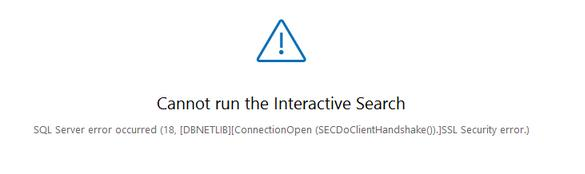
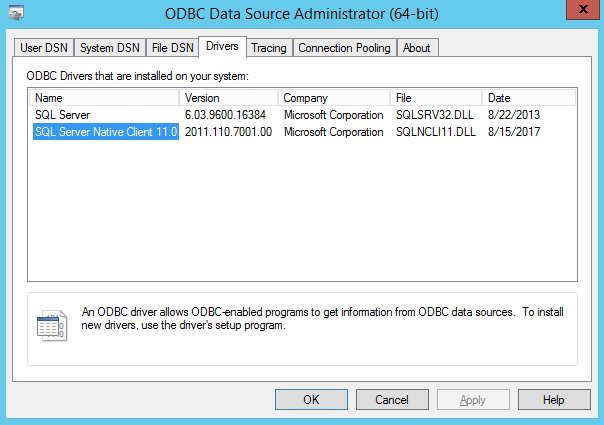

NOTE: This KBA describes a process of configuring Netwrix and SQL server to communicate via the secure channel - TLS version 1.2.
Here is an example of an error you may encounter while using the Search function in Netwrix Auditor
Sql Server error occurred (18, [DBNETLIB][ConnectionOpen (SECDoClientHandshake().]SSL Security error.)
-
- Make sure TLS 1.2 is enabled on both servers. Use this Microsoft guide to configure it: How to enable TLS 1.2.
- In order to find the version of Native Client start the ODBC Administrator on the Netwrix Auditor host, right-click the Start button and then choose Run, in the Run window, type the following, followed by Enter: odbcad32.exe
-
Check the Version column under the Drivers tab.
 - If the version is lower than "2011.110.7001.00" - download and install 64-bit version of SQL Native Client on the Netwrix Auditor host.
- Restart the Netwrix Auditor Audit Archive Service.
-
More about SQL and TLS 1.2 TLS 1.2 support for Microsoft SQL Server.